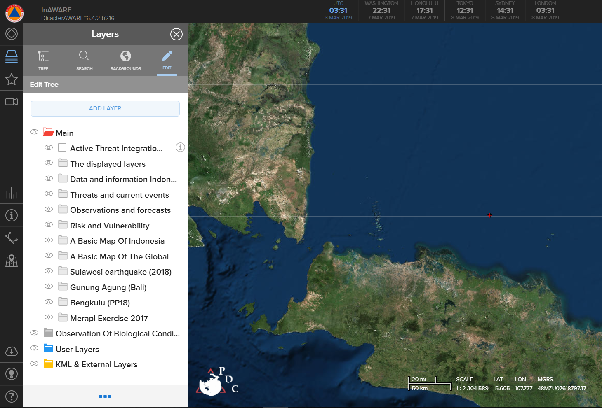
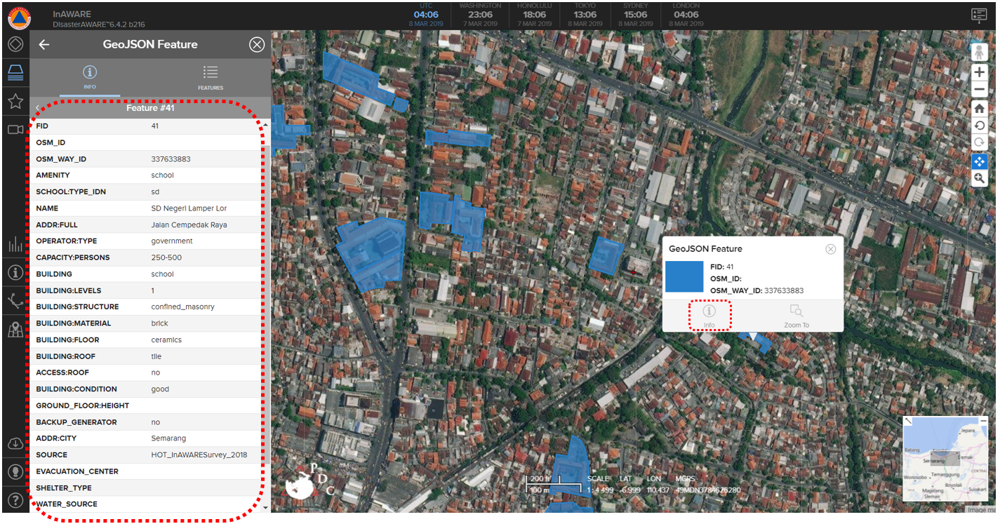

OpenStreetMap Data Integration to InAWARE
Download page as PDFObjectives:
- Knowing to create an account in InAWARE
- Knowing Add OpenStreetMap Data into InAWARE
The main goal of HOT-PDC InAWARE Mapping Project is to to complete and provide spatial open data for public so it can be used for any disaster management sector by National Government (BNPB) and Local Disaster Management Agency (BPBD) in InAWARE, a platform that made by Pacific Disaster Center (PDC), an institution from University of Hawaii. A complete explanation about InAWARE can be seen in PDC modules. This module will only explain about how OpenStreetMap data can be added and used into InAWARE.
I. Create and Access InAWARE Account
InAWARE limit its access only to specific users such as National Disaster Management Agency (BNPB), Local Disaster Management Agency (BPBD), humanitarian worker and disaster expert / practitioner. This policy is to maintain and ensure InAWARE critical information and content access still clear and without any intervention during disaster management activities. You can send a request to create InAWARE account with these steps:
- Access InAWARE at inaware.bnpb.go.id/
- Click Request InAWARE Access in login page.
The process would take about 24 hours before your request being approved. It also depends on BNPB as approval of the request. When you account has been made, it will be sent to you by e-mail.
- Please login into system
II. Adding OpenStreetMap Data into InAWARE
After you know about InAWARE and the steps to create an account, you will learn about how to add your field survey data that have been uploaded on OpenStreetMap into InAWARE. Data spatial format which can be used in InAWARE is GeoJSON. You can see Converting Shapefile to GeoJSON module. These are steps how to add OpenStreetMap data into InAWARE:
- Please click _Layers _menu in InAWARE
- Click Edit and select Add Layer

Add OpenStreetMap data as a New Layer
- Select File and click Please Choose the File
- Search and find your OpenStreetMap Data that has been converted into GeoJSON format
- Your OSM data layer will appear in InAWARE and placed into KML & External Layers folderwith name GeoJSON Feature

OpenStreetMap Data Layer in InAWARE
- You will see information of each feature / object from your OpenStreetMap data. You can select and click on the feature that you want to know its information and choose info option.

OpenStreetMap Feature Information in InAWARE
SUMMARY
Congratulations! You have understand about InAWARE and how to add you field survey data into it. For more advanced analysis, you can overlay others layer with your OpenStreetMap data in InAWARE. You can look at PDC modules that provided by Pacific Disaster Center (PDC) for more information about InAWARE.